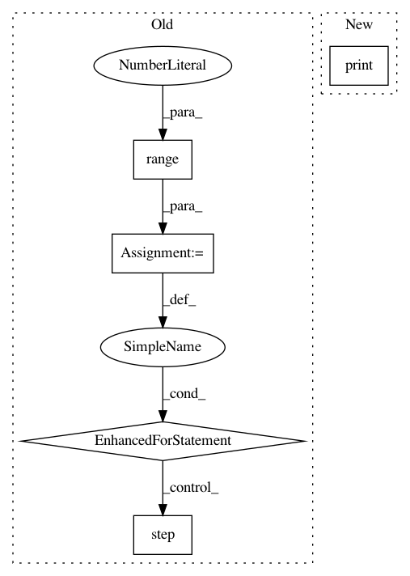

f6532b3c4c329e6d5d5fb846acc441df47616c4c,examples/gnn_explainer.py,,,#,30
Before Change
optimizer = torch.optim.Adam(model.parameters(), lr=0.01, weight_decay=5e-4)
x, edge_index = data.x, data.edge_index
for epoch in range(1, 201):
model.train()
optimizer.zero_grad()
log_logits = model(x, edge_index)
loss = F.nll_loss(log_logits[data.train_mask], data.y[data.train_mask])
print(loss)
loss.backward()
optimizer.step()
explainer = GNNExplainer(model, epochs=200)
node_feat_mask, edge_masks = explainer.explain_node(10, x, edge_index)
explainer.visualize_subgraph(10, edge_index)
After Change
explainer = GNNExplainer(model, epochs=200)
t = time.perf_counter()
node_feat_mask, edge_mask = explainer.explain_node(10, x, edge_index)
print(time.perf_counter() - t)
// for edge_mask in edge_masks:
// mask = edge_mask > 0
// print(edge_mask[mask])
// explainer.visualize_subgraph(10, edge_index, edge_masks)
In pattern: SUPERPATTERN
Frequency: 3
Non-data size: 5
Instances
Project Name: rusty1s/pytorch_geometric
Commit Name: f6532b3c4c329e6d5d5fb846acc441df47616c4c
Time: 2020-03-22
Author: matthias.fey@tu-dortmund.de
File Name: examples/gnn_explainer.py
Class Name:
Method Name:
Project Name: flow-project/flow
Commit Name: 75028b69a20261c44081f807a4a18d6d4bcb2929
Time: 2017-02-21
Author: dicksteinleah@gmail.com
File Name: cistar-dev/build-tester.py
Class Name:
Method Name:
Project Name: yhenon/pytorch-retinanet
Commit Name: 630a2c960116050b274bd69c46e58e1b000c949d
Time: 2018-04-26
Author: yannhenon@gmail.com
File Name: train.py
Class Name:
Method Name: